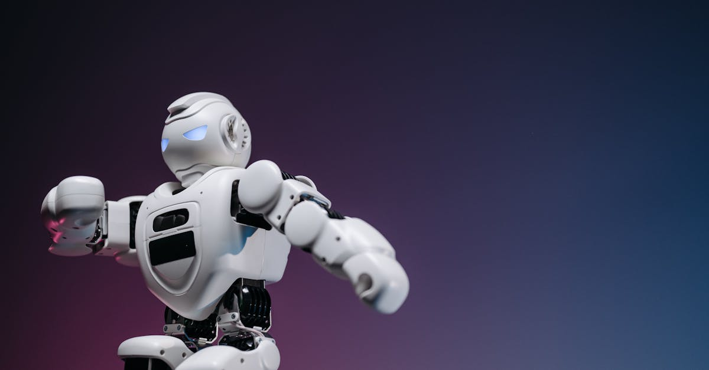

L'ombre de Kevin Warsh sur la politique monétaire
L'actualité économique est souvent rythmée par les déclarations des figures influentes, et Kevin Warsh, ancien gouverneur de la Réserve Fédérale américaine, ne fait pas exception. Bien que le titre d'un article de Bloomberg Markets suggère que ses propos pourraient ne pas avoir le poids attendu face aux défis actuels, il est essentiel de comprendre le contexte dans lequel ces affirmations surviennent. La nomination de Jerome Powell à la tête de la Fed, et plus largement, la gestion des cycles économiques complexes, placent les décideurs face à des enjeux colossaux. Les défis futurs, qu'ils soient inflationnistes, liés à la croissance ou à la stabilité financière, dépassent souvent la simple volonté ou la vision d'un individu, aussi expérimenté soit-il. La Fed opère dans un environnement globalisé où les interactions entre politiques monétaires, fiscales, et les chocs exogènes (sanitaires, géopolitiques) créent une toile complexe. Dans ce tableau, les déclarations de personnalités comme Warsh peuvent être interprétées comme des signaux, des avertissements ou des pistes de réflexion, mais la réalité opérationnelle de la banque centrale est dictée par une multitude de facteurs interdépendants. Le rôle de l'IA dans l'anticipation de ces dynamiques et dans l'optimisation des stratégies d'investissement, notamment sur les marchés des métaux précieux, prend alors tout son sens. Alors que les banques centrales naviguent à vue, les algorithmes, eux, peuvent traiter un volume de données sans précédent pour identifier des tendances et des opportunités, offrant ainsi une perspective différente, plus objective et potentiellement plus réactive face à l'incertitude ambiante. L'or, valeur refuge par excellence, pourrait particulièrement bénéficier de cette approche analytique avancée dans un climat d'incertitude politique et économique persistante.
👉 À lire : IA et Or : L'Afrique, un Nouveau Front Stratégique
Les défis économiques hors du contrôle de la Fed
L'article original met en lumière un point crucial : certains défis économiques majeurs échappent, par nature, au contrôle direct de la Réserve Fédérale. Il ne s'agit pas seulement de taux d'intérêt ou de politique monétaire, mais de forces plus profondes et souvent imprévisibles. Pensons à la transition énergétique, qui remodèle les industries, les chaînes d'approvisionnement et les prix des matières premières. Les tensions géopolitiques, comme les conflits en Europe de l'Est ou les rivalités commerciales, peuvent perturber les flux mondiaux de biens et de capitaux, alimentant l'inflation et l'incertitude. La démographie, avec le vieillissement de la population dans de nombreuses économies développées, soulève des questions sur la croissance potentielle, la productivité et la soutenabilité des systèmes de retraite. De plus, les innovations technologiques rapides, bien qu'elles soient une source de croissance à long terme, peuvent également créer des périodes de transition difficiles, avec des destructions d'emplois et une nécessité d'adaptation constante. Ces facteurs macroéconomiques, souvent qualifiés de 'cygnes noirs' ou de 'chocs structurels', imposent des contraintes significatives aux banques centrales. La Fed, sous la direction de Powell, doit naviguer dans ces eaux troubles, en tentant d'atteindre son double mandat de stabilité des prix et de plein emploi, tout en étant consciente de ses limites. C'est dans ce contexte que les investisseurs se tournent vers des actifs traditionnellement considérés comme des refuges, tels que l'or, ou explorent des stratégies d'investissement plus sophistiquées, capables d'analyser et de réagir à ces multiples variables. L'intelligence artificielle, par sa capacité à traiter des données complexes et à identifier des corrélations subtiles, offre une nouvelle dimension à la gestion des risques et à la recherche de performance dans un environnement aussi volatile et imprévisible, particulièrement pertinente pour les métaux précieux dont la valeur est intrinsèquement liée aux perceptions de risque et d'inflation.
👉 À lire : Immobilier US : L'Iran sème le doute sur les résultats
L'influence des marchés financiers sur la politique monétaire
Bien que Kevin Warsh ne puisse pas contrôler les forces économiques globales, ses déclarations et celles d'autres observateurs influents exercent néanmoins une pression sur la Fed et les marchés. L'anticipation des décisions de la banque centrale par les acteurs financiers est un phénomène bien connu. Les marchés 'préfèrent' souvent une certaine forme de politique monétaire, et les discours des officiels sont scrutés à la loupe pour y déceler des indices sur les orientations futures. Cette interaction crée une dynamique complexe où la Fed doit non seulement gérer l'économie réelle, mais aussi l'économie des attentes. Une communication maladroite peut entraîner une volatilité excessive, affectant les conditions financières et, par ricochet, l'économie elle-même. C'est là que réside une partie du pouvoir, ou de l'influence, de figures comme Warsh : ils peuvent façonner ces attentes, orienter le débat public et, indirectement, influencer la perception du risque. La Fed doit donc trouver un équilibre délicat entre la transparence nécessaire pour guider les marchés et la discrétion indispensable pour conserver une marge de manœuvre. L'émergence de l'intelligence artificielle dans l'analyse financière ajoute une couche supplémentaire à cette dynamique. Les algorithmes peuvent désormais analyser les flux d'informations, les sentiments du marché et les réactions aux annonces politiques à une vitesse et une échelle inégalées. Ils peuvent identifier des schémas de comportement des investisseurs et anticiper les mouvements de prix avec une précision croissante. Pour les traders d'or et de métaux précieux, comprendre cette interaction entre communication de la Fed, attentes du marché et analyse algorithmique devient crucial. L'or, souvent perçu comme un baromètre de l'incertitude et de la confiance dans les monnaies fiduciaires, peut réagir de manière spectaculaire aux moindres signaux de changement de politique monétaire ou aux signes de panique sur les marchés. Un agent IA entraîné sur ces données multiples peut potentiellement identifier des opportunités de trading bien avant les acteurs humains traditionnels, en décryptant les signaux faibles dans le bruit ambiant.

L'or, valeur refuge face à l'incertitude
Dans un monde où les certitudes économiques s'effritent et où les politiques monétaires font face à des défis structurels, l'or retrouve sa place de choix comme valeur refuge. Historiquement, le métal jaune a toujours été recherché en période d'incertitude politique, de tensions géopolitiques ou de crainte d'inflation. L'article de Bloomberg, en soulignant les limites de l'influence d'une personnalité sur la gestion des crises économiques, renforce indirectement l'attrait de l'or. Si les outils traditionnels des banques centrales montrent leurs limites face aux défis complexes, où se réfugier ? L'or, avec sa valeur intrinsèque et sa rareté, offre une alternative tangible aux monnaies fiduciaires dont la valeur peut être érodée par l'inflation ou les politiques monétaires accommodantes. Les récentes fluctuations des marchés, les débats sur la dette publique et les signes de ralentissement économique dans certaines régions du monde, alimentent cette demande. Les investisseurs, qu'ils soient institutionnels ou particuliers, cherchent à préserver leur capital face aux risques croissants. Ils se tournent vers l'or physique, les fonds négociés en bourse (ETF) adossés à l'or, ou encore les contrats à terme. Mais comment optimiser ses investissements dans ce contexte ? L'analyse des facteurs influençant le prix de l'or – taux d'intérêt réels, force du dollar, demande d'investissement et demande industrielle – est complexe. C'est là que l'intelligence artificielle peut apporter une valeur ajoutée significative. En traitant en temps réel des données macroéconomiques, des flux d'ordres, des actualités et même des indicateurs de sentiment, un agent IA peut aider à identifier les moments opportuns pour acheter ou vendre de l'or, en anticipant les mouvements de prix liés aux changements de perception du risque global. L'or n'est plus seulement une assurance passive ; il peut devenir un actif dynamique, géré activement pour maximiser les rendements dans un environnement volatile.
Les métaux précieux au-delà de l'or
Si l'or capte souvent l'attention, il n'est pas le seul métal précieux à jouer un rôle clé dans le portefeuille des investisseurs avisés, surtout en période d'incertitude économique et géopolitique. L'argent, souvent considéré comme le 'petit frère' de l'or, présente des caractéristiques uniques. Sa valeur est à la fois soutenue par son rôle de valeur refuge, similaire à l'or, mais aussi par sa forte demande industrielle, notamment dans les secteurs de l'électronique, des énergies renouvelables (panneaux solaires) et de la mobilité électrique. Cette double nature rend son prix potentiellement plus volatil que celui de l'or, mais aussi plus réactif aux cycles économiques et aux innovations technologiques. Le platine et le palladium, quant à eux, sont des métaux précieux essentiels à l'industrie automobile, principalement pour la fabrication des pots catalytiques qui réduisent les émissions polluantes. Les réglementations environnementales plus strictes, la transition vers les véhicules électriques (qui utilisent moins ou pas ces métaux) et les perturbations de l'offre (notamment en provenance d'Afrique du Sud pour le platine et de Russie pour le palladium) créent des dynamiques de prix complexes et des opportunités de trading spécifiques. L'analyse de ces marchés nécessite de prendre en compte des facteurs différents de ceux qui influencent l'or. Par exemple, les décisions politiques concernant les normes d'émission, les avancées dans la technologie des batteries, ou encore les grèves dans les mines sud-africaines peuvent avoir un impact plus direct sur le prix du platine et du palladium que sur celui de l'or. Ces subtilités rendent l'investissement dans les métaux précieux particulièrement adapté à l'intelligence artificielle. Un agent IA peut être entraîné à surveiller simultanément une multitude de facteurs spécifiques à chaque métal : données macroéconomiques globales, actualités industrielles, rapports sur l'offre et la demande, indicateurs environnementaux, et même le sentiment sur les marchés liés (comme celui des constructeurs automobiles). En corrélant ces informations disparates, l'IA peut identifier des opportunités d'arbitrage ou des mouvements de prix anticipés sur ces différents marchés, offrant une stratégie de diversification et de gestion des risques au-delà du seul marché de l'or.

L'intelligence artificielle comme outil de trading
Face à la complexité croissante des marchés financiers et à l'incertitude économique globale, l'intelligence artificielle (IA) s'impose comme un outil de trading révolutionnaire, particulièrement pertinent pour les métaux précieux. L'idée que des algorithmes puissent trader pour vous 24h/24 n'est plus de la science-fiction, mais une réalité accessible. Un agent IA performant est capable de bien plus que de simples exécutions d'ordres automatisées. Il s'agit de systèmes capables d'apprendre, de s'adapter et de prendre des décisions basées sur une analyse approfondie de données massives. Comment cela fonctionne-t-il concrètement pour l'or et les métaux précieux ?
- Analyse prédictive : L'IA peut analyser des volumes considérables de données historiques et en temps réel – indicateurs économiques, flux d'actualités, données sociales, rapports financiers, mouvements des devises, taux d'intérêt, etc. – pour identifier des tendances et des schémas que l'œil humain pourrait manquer. Elle peut ainsi anticiper les mouvements de prix potentiels de l'or, de l'argent, du platine ou du palladium avec une meilleure précision.
- Gestion des risques sophistiquée : Au-delà de la simple prédiction, l'IA excelle dans la gestion dynamique des risques. Elle peut ajuster automatiquement la taille des positions, définir des stop-loss et des take-profit optimisés en fonction de la volatilité du marché et du profil de risque défini, minimisant ainsi les pertes potentielles.
- Trading continu : Les marchés des métaux précieux sont ouverts presque 24h/24, cinq jours par semaine. Un agent IA ne connaît ni la fatigue, ni les émotions, ni les contraintes de fuseau horaire. Il peut surveiller les marchés et exécuter des transactions à tout moment, capturant ainsi des opportunités qui surviendraient pendant les heures de sommeil des traders humains.
- Adaptabilité : Les conditions de marché évoluent constamment. L'IA, grâce à des techniques d'apprentissage machine (machine learning), peut continuellement s'adapter à ces nouvelles conditions, affiner ses stratégies et améliorer ses performances au fil du temps, contrairement aux systèmes de trading traditionnels qui peuvent devenir obsolètes.
L'objectif n'est pas de remplacer l'investisseur, mais de lui fournir un outil puissant pour naviguer sur des marchés complexes, optimiser ses rendements et réduire son exposition au risque. L'agent IA de GoldTrade AI, spécialisé dans l'or et les métaux précieux, incarne cette nouvelle approche du trading, alliant la puissance de l'intelligence artificielle à la profondeur de l'expertise sur ces marchés spécifiques.
GoldTrade AI : L'agent IA au service de votre portefeuille
Dans le paysage financier actuel, marqué par une volatilité accrue et des défis économiques mondiaux complexes, la recherche de stratégies d'investissement performantes et sécurisées est primordiale. C'est dans ce contexte que l'approche innovante de GoldTrade AI prend tout son sens. Notre produit phare, un agent IA conçu spécifiquement pour le trading de l'or et des métaux précieux, offre une solution unique pour les investisseurs cherchant à naviguer ces marchés avec intelligence et efficacité.
Imaginez un partenaire de trading qui travaille pour vous sans relâche, 24 heures sur 24, 7 jours sur 7. C'est précisément ce que propose notre agent IA. Contrairement aux traders humains, qui sont soumis à des contraintes de temps, de fatigue et d'émotions, notre technologie opère en continu, exploitant chaque opportunité, quelle que soit l'heure ou le jour. Cette disponibilité constante est un avantage majeur sur les marchés des métaux précieux, qui peuvent connaître des mouvements significatifs en dehors des heures de bureau traditionnelles.
Mais la force de notre agent IA ne réside pas uniquement dans sa disponibilité. Elle est ancrée dans sa capacité à analyser des données complexes à une échelle et une vitesse inégalées. En exploitant des algorithmes avancés et des techniques d'apprentissage machine, notre IA passe au crible une quantité phénoménale d'informations : indicateurs économiques mondiaux, données de marché en temps réel, actualités financières, rapports géopolitiques, et bien plus encore. Cette analyse exhaustive lui permet d'identifier des tendances subtiles, des corrélations cachées et des signaux d'achat ou de vente potentiels que même les analystes les plus expérimentés pourraient négliger.
La stratégie de trading de notre agent IA est conçue pour être robuste et adaptable. Elle ne se contente pas de suivre des règles prédéfinies ; elle apprend et s'ajuste en permanence aux conditions changeantes du marché. La gestion des risques est une priorité absolue : l'IA est programmée pour limiter les pertes potentielles grâce à des mécanismes de stop-loss intelligents et à une allocation de capital optimisée, protégeant ainsi votre investissement.
GoldTrade AI s'adresse à tous les investisseurs, qu'ils soient novices ou expérimentés, qui souhaitent bénéficier de l'expertise de l'IA pour investir dans l'or et les métaux précieux. Nous offrons une solution clé en main, vous permettant de déléguer la complexité du trading à notre technologie de pointe, tout en conservant la pleine maîtrise de vos objectifs d'investissement. C'est la fusion de la technologie IA et de l'expertise des marchés des métaux précieux, conçue pour vous offrir une performance optimale et une tranquillité d'esprit inégalée.
Préparer l'avenir : L'IA et la nouvelle donne de l'investissement
L'article initial, bien que centré sur la Fed et Kevin Warsh, nous pousse à réfléchir plus largement à l'avenir de l'investissement. Les méthodes traditionnelles, basées sur l'analyse humaine seule, montrent leurs limites face à la vitesse et à la complexité des marchés modernes. L'intelligence artificielle n'est pas une simple tendance passagère ; elle représente une transformation fondamentale de la manière dont nous abordons les marchés financiers. Pour les métaux précieux, historiquement considérés comme des actifs tangibles et des valeurs refuges, l'IA ouvre de nouvelles perspectives. Elle permet non seulement d'optimiser les stratégies d'achat et de vente basées sur des analyses prédictives plus fines, mais aussi de mieux comprendre les facteurs sous-jacents qui influencent leur prix. Par exemple, l'IA peut modéliser l'impact combiné de l'inflation, des politiques monétaires, des tensions géopolitiques et même des tendances de consommation sur la demande d'or ou d'argent. Cette capacité d'analyse holistique est cruciale. De plus, l'IA démocratise l'accès à des stratégies de trading sophistiquées. Ce qui était autrefois réservé aux fonds spéculatifs et aux institutions financières disposant de ressources considérables devient accessible aux investisseurs individuels grâce à des plateformes comme GoldTrade AI. L'agent IA agit comme un gestionnaire de portefeuille automatisé, capable d'exécuter des stratégies complexes 24h/24, tout en gérant activement le risque. Il est essentiel de comprendre que l'IA n'est pas une 'boîte noire' magique, mais un outil puissant qui nécessite une conception et une supervision expertes. Chez GoldTrade AI, nous combinons le savoir-faire de spécialistes des métaux précieux avec les capacités de pointe de l'IA pour offrir une solution fiable et performante. Se préparer à l'avenir, c'est adopter ces nouvelles technologies et comprendre comment elles peuvent renforcer vos stratégies d'investissement, en particulier dans des actifs aussi stratégiques que l'or et les métaux précieux, qui continueront de jouer un rôle central dans un monde en mutation constante.
Conclusion : Naviguer l'incertitude avec l'IA et l'or
L'analyse des propos entourant Kevin Warsh et la Fed, telle que présentée par Bloomberg Markets, met en lumière une vérité fondamentale : les défis économiques actuels sont vastes et, dans une large mesure, hors du contrôle direct des décideurs politiques traditionnels. Face à cette incertitude structurelle, les investisseurs cherchent des ancrages solides et des stratégies agiles. L'or et les métaux précieux, par leur nature intrinsèque et leur rôle historique de valeur refuge, se positionnent naturellement comme des éléments clés d'un portefeuille résilient. Cependant, se contenter de détenir ces actifs ne suffit plus. La véritable valeur réside dans la capacité à naviguer activement sur ces marchés, à anticiper les mouvements et à optimiser les rendements.
C'est là qu'intervient la révolution de l'intelligence artificielle. Un agent IA spécialisé dans le trading de l'or et des métaux précieux, comme celui proposé par GoldTrade AI, offre une solution sans précédent. Il combine la puissance d'analyse de données massives, l'exécution continue 24h/24 et une gestion des risques adaptative. Il ne s'agit pas de remplacer l'intelligence humaine, mais de l'augmenter, en fournissant des insights et des capacités d'exécution qui dépassent les limites humaines. Alors que les banques centrales et les économistes débattent des complexités futures, votre stratégie d'investissement peut bénéficier d'une approche proactive et technologique. L'agent IA de GoldTrade AI est conçu pour transformer l'incertitude en opportunité, en exploitant la puissance de l'IA pour optimiser vos investissements dans l'or et les métaux précieux, vous assurant ainsi une meilleure protection de votre capital et un potentiel de rendement accru dans un environnement économique mondial en constante évolution. Embrasser l'avenir du trading, c'est choisir l'intelligence artificielle.